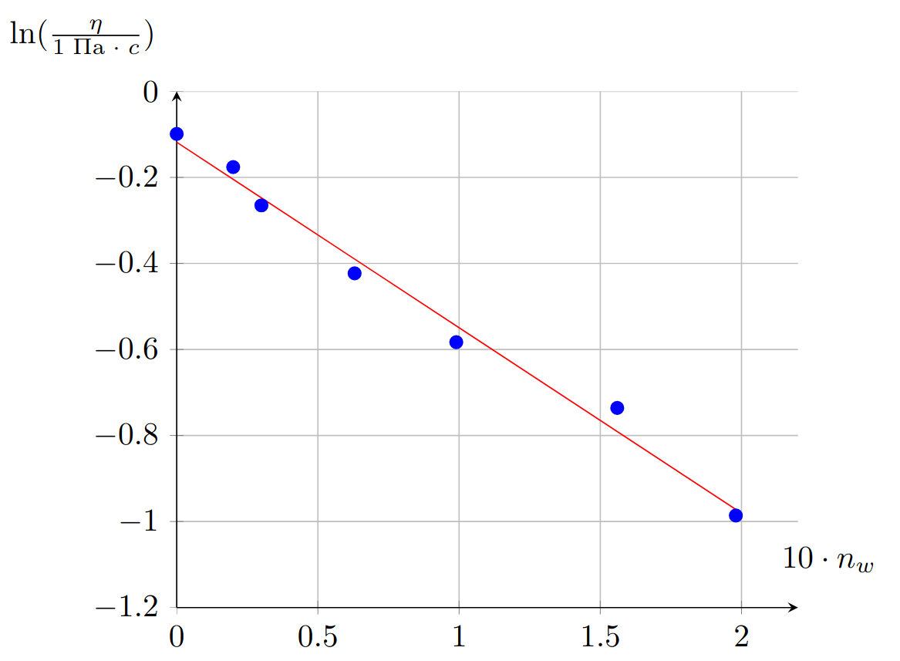
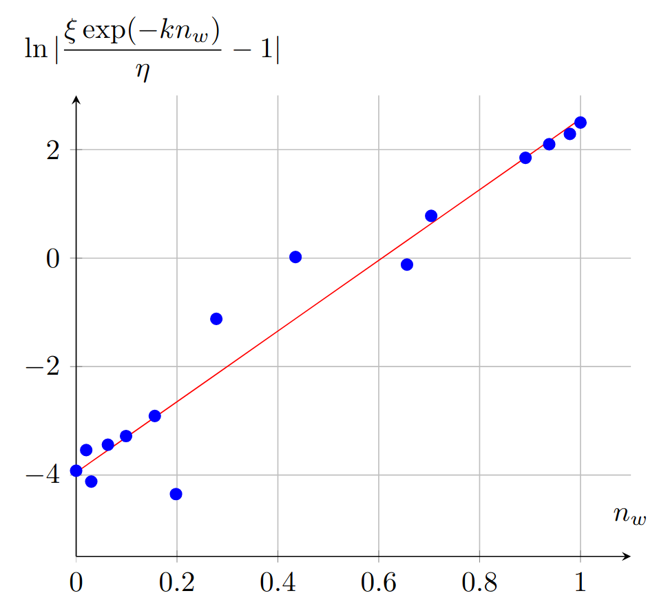
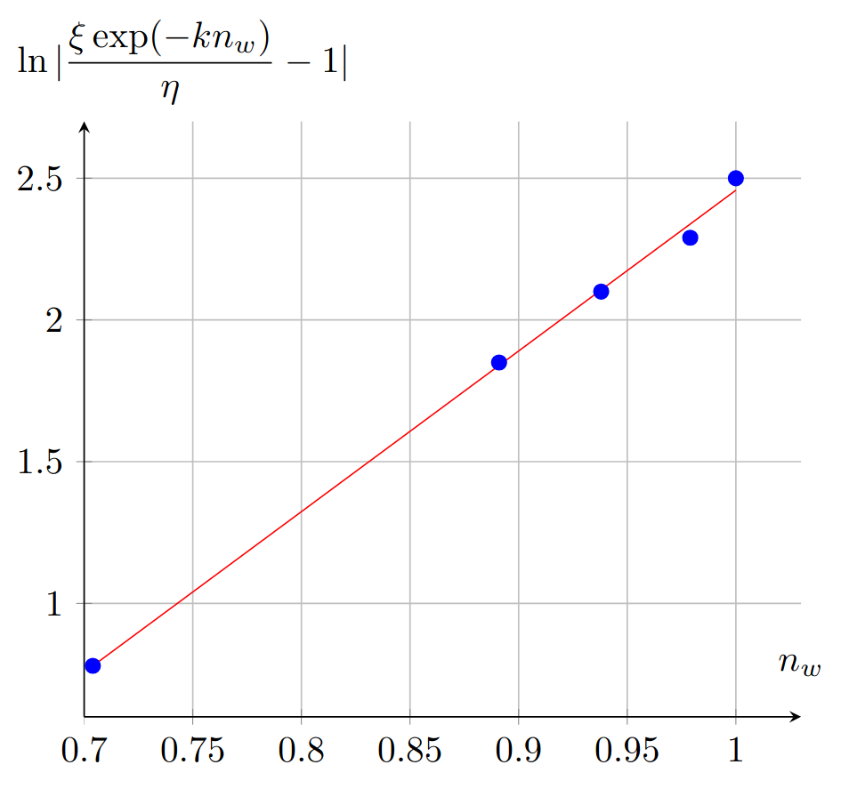
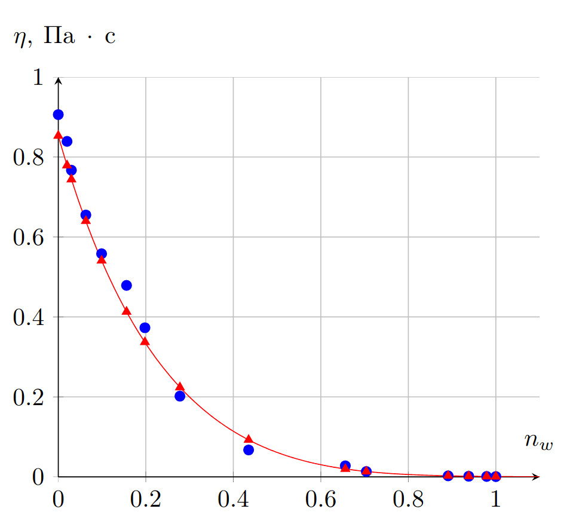
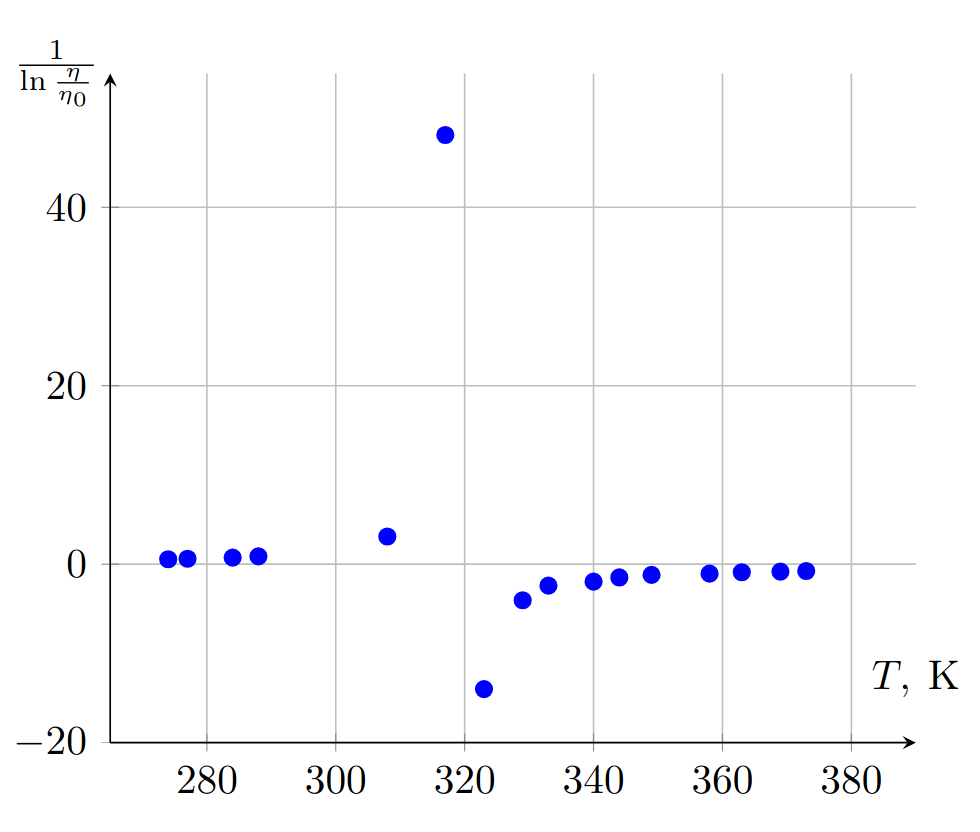
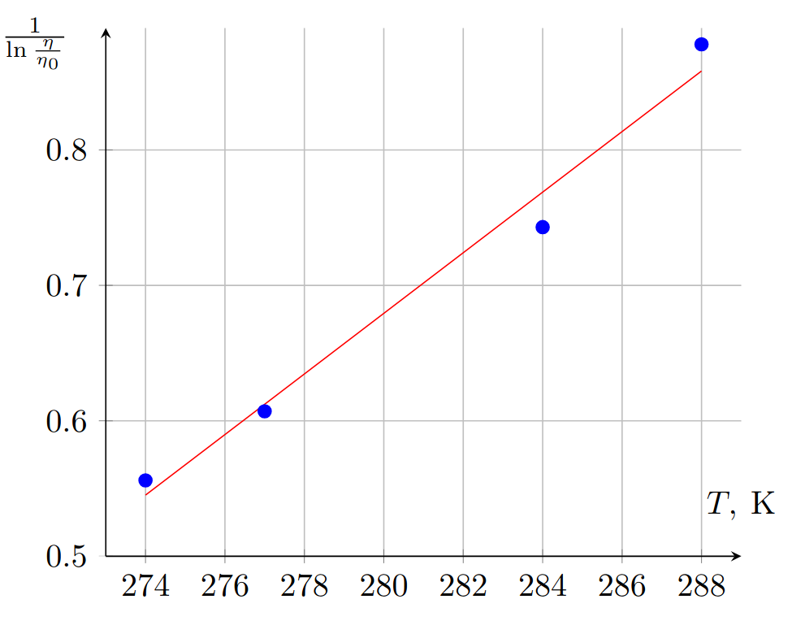

W26 (2026) — English translation
The amount of a substance in a mixture is defined as: \[\nu=\dfrac{m}{\mu},\]where $m$ is the mass of the substance, and $\mu$ is its molar mass. Let's write the formula for the molar concentration of water: \[n_w=1-n_g=1-\dfrac{\nu_g}{\nu_g+\nu_w},\]from here:
Using the table method or the method of simple iterations with $a=0.9$, we get:
Let's recalculate the points into the dependence $\operatorname{ln}\dfrac{\eta}{1~\mathrm{Pa}\cdot с}(n_w)$.
$T_g,~\mathrm{K}$ $w_g$ $\eta,~\mathrm{Pa}\cdotс$ $n_w$ $\operatorname{ln} \eta$ 195.2 1.000 0.906 0 -0.099 194.8 0.996 0.839 0.020 -0.176 194.6 0.994 0.767 0.030 -0.265 193.9 0.987 0.655 0.063 -0.423 193.1 0.979 0.558 0.099 -0.583 191.8 0.965 0.479 0.156 -0.736 190.8 0.954 0.373 0.198 -0.986 188.6 0.930 0.202 0.278 -1.600 183.4 0.869 0.0674 173.0 0.728 0.0278 170.0 0.682 0.0134 154.6 0.384 0.0026 149.3 0.252 0.0017 143.8 0.100 0.0012 140.3 0 0.0009
$\operatorname{ln}\dfrac{\eta}{1~\mathrm{Pa}\cdot с}(n_w)$
Approximating the dependence of the straight line, we obtain: \[k=4.31,\] \[\operatorname{ln}\dfrac{\xi}{1~\mathrm{Pa}\cdot с}=-0.12,\]from which it follows:

Note: due to the inaccuracy of experimental data, some values cannot be recalculated. There are no more than 5 such values.
Let's continue recalculating points:
$T_g,~\mathrm{K}$ $w_g$ $\eta,~\mathrm{Pa}\cdotс$ $n_w$ $\operatorname{ln}|\dfrac{\xi \operatorname{exp}(-kn_w)}{\eta}-1|$ 195.2 1.000 0.906 0 -3.92 194.8 0.996 0.839 0.020 -3.54 194.6 0.994 0.767 0.030 -4.12 193.9 0.987 0.655 0.063 -3.44 193.1 0.979 0.558 0.099 -3.28 191.8 0.965 0.479 0.156 -2.91 190.8 0.954 0.373 0.198 -4.35 188.6 0.930 0.202 0.278 -1.12 183.4 0.869 0.0674 0.435 0.02 173.0 0.728 0.0278 0.656 -0.12 170.0 0.682 0.0134 0.704 0.78 154.6 0.384 0.0026 0.891 1.85 149.3 0.252 0.0017 0.938 2.10 143.8 0.100 0.0012 0.979 2.29 140.3 0 0.0009 1 2.50
Let's plot the resulting points on the graph:
$\operatorname{ln}|\dfrac{\xi \operatorname{exp}(-kn_w)}{\eta}-1|(n_w)$
In the range $n_w \in [0, 0.2]$, the expression under the logarithm has a different sign and is near zero, so the function in this region behaves non-monotonic. To draw a straight line, we take into account only points in the range $n_w \in [0.7, 1].$
$\operatorname{ln}|\dfrac{\xi \operatorname{exp}(-kn_w)}{\eta}-1|(n_w)$ in the range $n_w \in [0.7, 1]$ (not required from participants)
For $n_w>0.7$, $\dfrac{\xi \operatorname{exp}(-kn_w)}{\eta}>1$ holds, so $a>0$. Having drawn the approximating straight line, we find: \[b=5.66,\]\[\operatorname {ln} a=-3.21,\]from here:


Let's calculate the theoretical values of $\eta(n_w)$:
$T_g,~\mathrm{K}$ $w_g$ $\eta,~\mathrm{Pa}\cdotс$ $n_w$ $\operatorname{ln} \eta$ $\operatorname{ln}|\dfrac{\xi \operatorname{exp}(-kn_w)}{\eta}-1|$ $\eta_{теор},~\mathrm{Pa}\cdotс$ 195.2 1.000 0.906 0 -0.099 -3.92 0.853 194.8 0.996 0.839 0.020 -0.176 -3.54 0.779 194.6 0.994 0.767 0.030 -0.265 -4.12 0.744 193.9 0.987 0.655 0.063 -0.423 -3.44 0.640 193.1 0.979 0.558 0.099 -0.583 -3.28 0.541 191.8 0.965 0.479 0.156 -0.736 -2.91 0.413 190.8 0.954 0.373 0.198 -0.986 -4.35 0.337 188.6 0.930 0.202 0.278 -1.600 -1.12 0.224 183.4 0.869 0.0674 0.435 0.02 0.0926 173.0 0.728 0.0278 0.656 -0.12 0.0199 170.0 0.682 0.0134 0.704 0.78 0.0135 154.6 0.384 0.0026 0.891 1.85 0.0026 149.3 0.252 0.0017 0.938 2.10 0.0017 143.8 0.100 0.0012 0.979 2.29 0.0012 140.3 0 0.0009 1 2.50 0.0010
Let's build a graph of the obtained dependencies:
$\eta(n_w)$
Having drawn smoothing curves, we conclude: the equation is applicable over the entire range ($n_w \in [0, 1]$).

Let's express $w_g$: \[w_g=\dfrac{m_g}{m_g+m_w}=\dfrac{\rho_gc_g}{(\rho_g-\rho_w)c_g+\rho_w},\] then:
The dependence $\dfrac{1}{\operatorname {ln}\dfrac{\eta}{\eta_0}}(T)$ is linear with slope $k=\dfrac{1}{DT_0}$ and intercept term $b=-\dfrac{1}{D}$. Let’s recalculate the point using this formula and plot the linearized dependence:
$T,~^\circ C$ $\eta,~\mathrm{Pa}\cdotс$ $T,~\mathrm{K}$ $\dfrac{1}{\operatorname {ln}\dfrac{\eta}{\eta_0}}$ 1 0.0201 274 0.556 4 0.0173 277 0.607 11 0.0128 284 0.743 15 0.0104 288 0.878 35 0.0046 308 3.10 44 0.0034 317 48.1 50 0.0031 323 -14.0 56 0.0026 329 -4.04 60 0.0022 333 -2.41 67 0.0020 340 -1.96 71 0.0017 344 -1.487 76 0.00145 349 -1.20 85 0.0013 358 -1.06 90 0.0011 363 -0.903 96 0.0010 369 -0.831 100 0.0009 373 -0.764
Let's plot the resulting relationship:
$\dfrac{1}{\operatorname {ln}\dfrac{\eta}{\eta_0}}(T)$
From the proposed equation it follows that it can only be fulfilled at sufficiently low temperatures. It is clear from the graph that the equation is applicable for the first 4 points of the graph (at $T<288~\mathrm{K}$). Let's demonstrate this clearly:
$\dfrac{1}{\operatorname {ln}\dfrac{\eta}{\eta_0}}(T)$ at $T<288~K$ (not required from participants)
Having determined the parameters of the approximating straight line, we obtain a system of equations: \[\begin{cases}-\dfrac{1}{D}=-5.60\\ \dfrac{1}{DT_0}=0.022 К^{-1},\end{cases}\] which follows:


The equation obtained for $\eta_n(n_w)$ is applicable over the entire range. Therefore, it is enough to convert $c_g$ into $n_w$: \[n_w=1-\frac{w_g\mu_w}{\mu_g-w_g(\mu_g-\mu_w)}=1-\frac{\dfrac{\rho_gc_g}{(\rho_g-\rho_w)c_g+\rho_w}\mu_w}{\mu_g-\dfrac{\rho_gc_g}{(\rho_g-\rho_w)c_g+\rho_w}(\mu_g-\mu_w)}\approx 0.80\] and substitute it into the resulting equation. Thus we get:
The equation obtained for $\eta_t(T)$ is indispensable for $T=25^\circ C$. You can determine the viscosity at a given temperature, for example, graphically by plotting the curve $\eta_t(T)$, but the answer with good accuracy is given by a linear approximation: \[\eta_{25}\approx\dfrac{\eta_{15}+\eta_{35}}{2}=7.5~\mathrm{m}Па\cdot с.\]